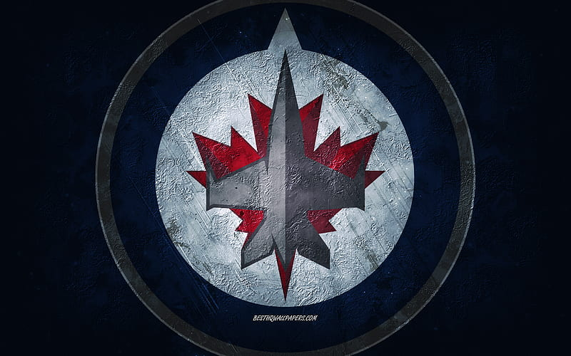

The Winnipeg Jets are a professional ice hockey team based in Winnipeg. The team competes in the National Hockey League (NHL) as a member of the Central Division in the Western Conference, and is owned by True North Sports & Entertainment, playing its home games at Canada Life Centre, formerly Bell MTS Place and MTS Centre.
The Jets were established as the Atlanta Thrashers on June 25, 1997, and began play in the 1999–2000 NHL season. True North Sports & Entertainment then bought the team in May 2011, and relocated the franchise to Winnipeg prior to the 2011–12 season, making them the first NHL franchise to relocate since the Hartford Whalers became the Carolina Hurricanes in 1997. The team was renamed the Jets after Winnipeg's original WHA/NHL team, which relocated after the 1995–96 season to become the Phoenix Coyotes.